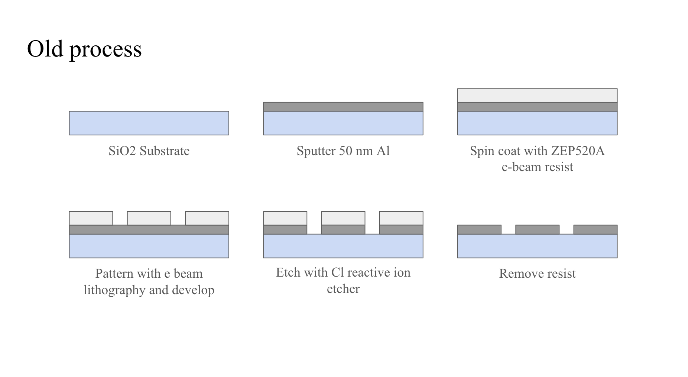
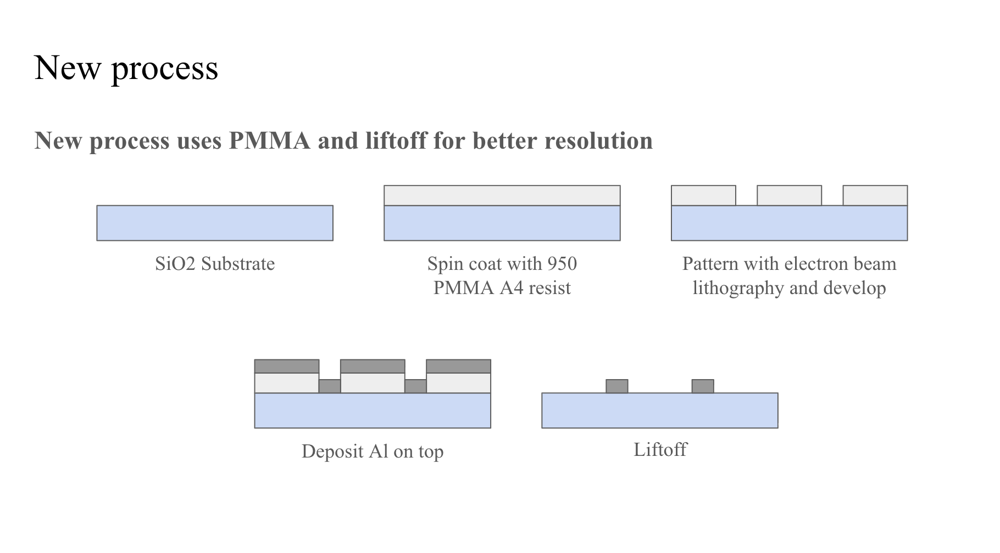
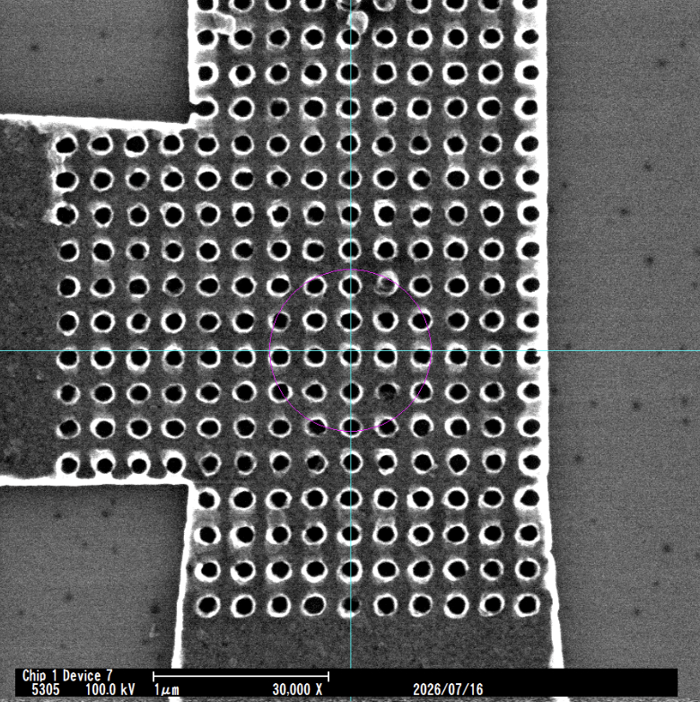
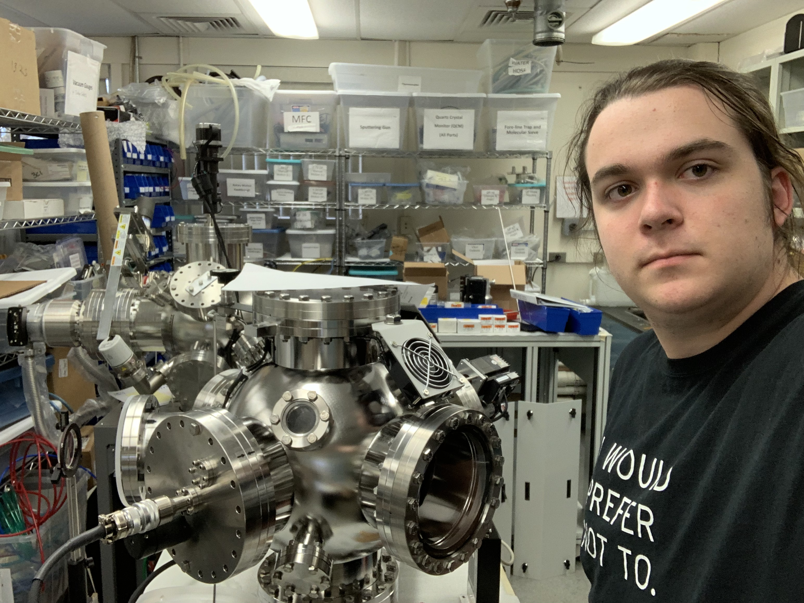

I am currently working on a project in Professor Mohammad Hafezi's group, researching how nanopatterning can be used to increase critical temperature in superconductors. Recent theoretical simulation work at the University of Maryland has indicated that nanopatterning a superconductor such as aluminum may be able to increase the critical temperature depending on the precise geometry of the patterns. I am currently fabricating devices to determine the validity of this theory. My goal is to figure out firstly if nanopatterning can have an effect on critical temperature, and secondly what the relationship is between the area, perimeter, and general shape of the patterns.
My role is to design, fabricate, and measure these devices. Fabrication is via electron beam lithography. I am using 950 PMMA A4 resist, and depositing aluminum thin films with electron beam evaporation, then doing liftoff. This is a process I have optimized over the course of several months, after first experimenting with ZEP resist and reactive ion etching. Below is a schematic of the fabrication processes:


My current devices are designed to have 50 nm and 100 nm holes, spaced 100 nm and 200 nm apart respectively. Patterned regions of several microns are connected to four-point measurement probes so that resistance vs. temperature measurements can be taken. The devices were designed in KLayout, and then patterned on an Elionix 100kV EBL system. Here is a picture of one of my fully fabricated devices with 100 nm diamter holes:

This past June I participated in the 2026 SSTPRS program at the University of Maryland. The program was started by Professor Jim Gates with the goal of helping undergraduates gain a higher level of mathematical sophistication, and develop the mathematical, organizational, and collaborative skills necessary for theoretical physics research. The program is generally focused on problems in supersymmetry. The program begins with a one month intensive workshop in mathematical physics. The workshop runs seven hours a day, seven days a week, and involves a mixture of lectures and collaborative problem solving. Topics covered include Lie groups and Lie algebras, Clifford algebras, differential geometry, special and general relativity, classical mechanics, and supersymmetric theories.
After the workshop portion of the program, a research topic is introduced, and students work collaboratively on that project. My research project is on the dimensional reduction of four dimensional N = 1 supersymmetric algebras into three dimensional spacetime. We are currently focusing on the dimensional reduction in the vector, tensor, and chiral supermultiplets. My mentors for the program were Professor Gates, as well as Dr. Konstantinos Koutrolikos. Both of them were phenomenal mentors and teachers, and created a truly unforgettable program.
In case anyone is curious here are my notes from the workshop portion of SSTPRS. I have not yet had time to fully edit them, so there are likely quite a few typos and mistakes:
I am also working on a research project with Professor Ichiro Takeuchi in the Quantum Materials Center. My project involves fabrication of indium and Bismuth Palladium spin injection devices and low temperature measurements. Devices are predominantly being fabricated with photolithography, followed by ion beam etching, and a liftoff step. Bismuth Palladium thin films are fabricated via cosputtering, which creates a composition gradient on the wafer. After characterizing the composition, the appropriate segments of the wafer are used for devices. Measurements are being taken in a Quantum Design Physical Properties Measurement System.
Before starting my research work at UMD, I worked at Blue Wave Semiconductors for a little over a year. I started as an unpaid intern my senior year of high school, and then was hired for the following summer and winter. They specialize in manufacturing thin film deposition systems. While there I did a research project on methods of directly bonding semiconductor materials. I also spent quite a bit of time maintaining and constructing high vacuum systems and all sorts of thin film equipment! I worked with sputtering, thermal evaporation, electron beam deposition, and pulsed laser deposition systems. I also did a little bit of stuff with CVD diamond, including hot filament and microwave plasma chemical vapor deposition. Blue Wave will always have a special place in my heart as my first real lab or research experience.
